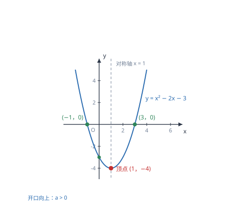

二次函数的图象与性质
二次函数的图象是一条抛物线，开口由 a 定、位置由对称轴定、高低由顶点定；配方法能把这三件事一次看清。
| 所属主题 | 函数 |
|---|---|
| 所属模块 | 代数 |
| 课标学段 | 第四学段（7~9 年级） |
| 前置知识 | 一次函数的图象与性质、一元二次方程、根的判别式与根与系数的关系 |
| 核心素养 | 几何直观运算能力抽象能力 |
教材定位
人民教育出版社《人教版（2024版）义务教育教科书·数学》
九年级上册第26章 二次函数26.1 二次函数的概念26.2 二次函数的图象和性质
对应九上 26.1 与 26.2：概念在 26.1，抛物线的顶点、对称轴与开口方向在 26.2。
说明
形如 y=ax^2+bx+c（a、b、c 是常数，a≠ 0）的函数叫二次函数。它的图象叫抛物线，是一条关于某条竖直线对称的曲线。a 决定开口方向与开口大小：a>0 开口向上，a<0 开口向下；|a| 越大开口越窄。这条对称的竖直线叫对称轴，对称轴与抛物线的交点叫顶点，顶点是抛物线的最高点（a<0）或最低点（a>0）。
二次函数有三种常用写法。一般式 y=ax^2+bx+c 便于读系数；顶点式 y=a(x-h)^2+k 直接给出顶点 (h,k) 与对称轴 x=h；交点式 y=a(x-x_1)(x-x_2) 直接给出与 x 轴的两个交点。由一般式求对称轴与顶点，用配方法或用公式：对称轴 x=-b/2a，顶点 ≤ft(-b/2a,\dfrac4ac-b^24a)。
使用场景
当题目描述的运动轨迹是抛物线时（投篮、铅球、喷泉、拱桥、隧道），用二次函数建模。常见的任务有三种：由已知点求解析式、求最大高度（顶点纵坐标）、求落点或跨度（令 y=0 解方程）。建模时先把坐标系建在合适的位置（如把落地点或最高点设为原点），能让式子简单很多。
当题目要求「求最大值或最小值」时，先判断目标量能否写成二次函数。若能，配方求顶点即得最值；若自变量有范围限制，还要比较顶点与两端点的函数值，取其中最大（或最小）的那个。这是二次函数在应用题中最主要的用途。
注意点
对称轴公式是 x=-b/2a，负号不能丢。许多同学写成 b/2a，导致对称轴左右颠倒、顶点坐标全错。记住它的来历（配方法中 ≤ft(x+b/2a)^2 里的常数是 b/2a，令其为零得 x=-b/2a），就不会记错。
求最值时必须考虑自变量的取值范围。抛物线的顶点不一定是「整个图象」在指定区间上的最值点：若顶点落在区间外，最值在端点取得。例如 y=x^2 在 1≤ x≤ 3 上的最小值是 x=1 时的 1，不是顶点的 0。
证明

图 1：抛物线的对称轴、顶点与两轴交点，是读图时最先要找的四个要素
证明
结论 1y=ax^2 的图象关于 y 轴对称、顶点在原点；a>0 时开口朝上且 y 全非负，a<0 时开口朝下且 y 全非正。
最简单的 y=ax^2：x 取相反数时 y 相同（如 x=2 与 x=-2 都得 4a），所以图象关于 y 轴对称，顶点在原点，这是抛物线最基本的形态。a>0 时所有 y 都非负、开口朝上；a<0 时所有 y 都非正、开口朝下。
关键一步依据是 x 取相反数时平方项不变（(-x)^2=x^2），所以图象关于 y 轴对称；而 a 的符号决定 ax^2 的正负，a>0 时值非负、开口向上，a<0 时值非正、开口向下。
结论 2y=x^2-2x-3=(x-1)^2-4 的图象是 y=x^2 向右平移 1 个单位、再向下平移 4 个单位得到的，对称轴是 x=1，顶点是 (1,-4)。
一般的二次函数可以通过配方化成顶点式。以 y=x^2-2x-3 为例：x^2-2x-3=(x^2-2x+1)-1-3=(x-1)^2-4。这告诉我们：它的图象就是 y=x^2 向右平移 1 个单位、再向下平移 4 个单位得到的。于是对称轴变成 x=1，顶点变成 (1,-4)，开口方向与大小都不变。
关键一步依据是完全平方公式 x^2-2x+1=(x-1)^2：配方后与 y=x^2 只差一个平移，而平移不改变开口方向与开口大小，只改变对称轴与顶点的位置。
结论 3二次函数的顶点式是 y=a≤ft(x+b/2a)^2+\dfrac4ac-b^24a，对称轴是 x=-b/2a，顶点纵坐标是 \dfrac4ac-b^24a。
配方的一般结果是 y=a≤ft(x+b/2a)^2+\dfrac4ac-b^24a。括号内 x+b/2a=0 时函数取到顶点，所以对称轴是 x=-b/2a；把 x=-b/2a 代回原式，就算出顶点的纵坐标 \dfrac4ac-b^24a。公式不是背出来的，是配方后读出来的。
关键一步依据是配方法与平方项非负（或非正）：括号内为零时平方项取到最小值 0，那一点就是转折点，所以对称轴由 x+b/2a=0 读出；再把该横坐标代回原式即得顶点纵坐标。
结论 4顶点是抛物线的转折点：a>0 时顶点是最低点、函数有最小值，a<0 时顶点是最高点、函数有最大值。
顶点的意义在于它是「转折点」。a>0 时，抛物线在对称轴左侧下降、右侧上升，顶点是最低点，函数有最小值；a<0 时相反，顶点是最高点，函数有最大值。所以「求最值」与「求顶点」是同一件事，前提是顶点落在自变量的取值范围内。
关键一步依据是顶点两侧的走向：对称轴左侧与右侧的函数值都朝顶点方向变化，故顶点是唯一的极值点。而「最值能否取到」还要看顶点对应的自变量是否在取值范围内。
结论 5c 是抛物线与 y 轴交点的纵坐标，a 决定开口，b 与 a 一起决定对称轴的位置。
a、b、c 各自的几何含义：c 是 x=0 时的函数值，即抛物线与 y 轴交点的纵坐标；a 决定开口；b 与 a 一起决定对称轴的位置——对称轴在 y 轴左侧还是右侧，由 -b/2a 的符号决定，即「a、b 同号时对称轴在左侧，异号时在右侧」。
关键一步依据是令 x=0 得 y=c，即纵截距为 c；对称轴的位置由 -b/2a 的符号决定，为负时在 y 轴左侧、为正时在右侧，这就是「同号在左、异号在右」的来处。
动手实验
在同一张坐标纸上画三条抛物线：y=x^2、y=(x-1)^2-4、y=-x^2+2。先列表描点，再观察：第一条顶点在原点、开口向上；第二条与第一条形状完全相同，只是整体右移 1、下移 4；第三条开口向下、顶点在 (0,2)。三条曲线对照，就能看清「a 管开口、括号里的数管左右、括号外的数管上下」。
解题思路
求顶点与对称轴有三种办法，按题目条件选择：一般式用公式 x=-b/2a，最快；系数较整时用配方法，过程清楚、不易记错；已知两个交点时，用交点式并取两交点的中点作为对称轴，x=\dfracx_1+x_22。三种办法结果必须一致，可以用另一种办法核对。
画抛物线找五个要素：开口方向（看 a 的正负）、对称轴、顶点、与 y 轴的交点 (0,c)、与 x 轴的交点（令 y=0 解方程，可能有两个、一个或没有）。画完检查曲线是否关于对称轴对称、是否穿过这几个点。
求最值分两步：先配方求顶点，判断顶点是否落在自变量范围内；若在，最值就是顶点的纵坐标；若不在，把区间两个端点分别代入，取较大（或较小）者。应用题还要回到实际意义，检查结果是否合理（长度为正、数量为整数）。
按场景的例题
例 1（场景：图形设计） 抛物线形拱桥的跨度与高度
某拱桥的拱形可以近似看作抛物线 y=-1/25x^2+4，其中 x、y 的单位是米，y 是拱高。求这座拱桥的跨度（两个落地点之间的距离）与最大拱高。
解：落地点对应 y=0：-1/25x^2+4=0，即 x^2=100，x=± 10。所以两个落地点是 (-10,0) 与 (10,0)，跨度为 10-(-10)=20 米。最大拱高在顶点处，该抛物线顶点为 (0,4)，所以最大拱高 4 米。检验：在 x=5 处，y=-25/25+4=3 米，低于顶点而高于地面，符合拱形特征。
答：跨度 20 米，最大拱高 4 米。
例 2（场景：物理情境） 竖直上抛物体的高度与时间
一个小球以 20 米/秒的初速度竖直上抛，其高度 h（米）与时间 t（秒）满足 h=20t-5t^2。小球能达到的最大高度是多少？在几秒时达到？
解：把 h=20t-5t^2 配方：h=-5(t^2-4t)=-5≤ft[(t-2)^2-4]=-5(t-2)^2+20。所以 t=2 时取最大值 20。也可以用公式：对称轴 t=-b/2a=-20/2×(-5)=2，代入得 h=20× 2-5× 4=20。因为 a=-5<0，开口向下，顶点是最高点。
答：最大高度 20 米，在 t=2 秒时达到。
例 3（场景：竞技与游戏） 投篮轨迹的最高点
某次投篮中，篮球的飞行高度 y（米）与水平距离 x（米）近似满足 y=-0.2x^2+x+2。求篮球飞行过程中的最大高度，以及此时距出手点的水平距离。
解：对称轴 x=-b/2a=-1/2×(-0.2)=-1/-0.4=2.5。因为 a=-0.2<0，开口向下，顶点为最高点。代入求纵坐标：y=-0.2× 2.5^2+2.5+2=-0.2× 6.25+4.5=-1.25+4.5=3.25。检验：x=2 时 y=-0.8+2+2=3.2<3.25，x=3 时 y=-1.8+3+2=3.2<3.25，顶点确实是最大值。
答：最大高度 3.25 米，此时距出手点水平距离 2.5 米。
常用推论
由对称轴公式可以判断 a、b 的符号关系：对称轴在 y 轴右侧时 -b/2a>0，即 a、b 异号；在左侧时同号；对称轴为 y 轴时 b=0。这条在「由图象判断系数符号」的选择题里几乎必考。
抛物线的对称性可用于「已知一根求另一根」或「已知两点纵坐标相同求对称轴」：若 (x_1,y_0) 与 (x_2,y_0) 都在抛物线上，则对称轴是 x=\dfracx_1+x_22。它把几何上的对称与代数上的平均数连在一起。
平移规律：y=a(x-h)^2+k 是把 y=ax^2 向右平移 h、向上平移 k 得到的（h<0 则向左，k<0 则向下）。口诀「左加右减、上加下减」指的是括号内与括号外的符号变化：向左移 m 写成 (x+m)，向上移 m 写成 +m。
易错点
错求 y=x^2-2x-3 的对称轴，写成 x=-2/2× 1=-1。
为什么错对称轴公式漏了负号。正确是 x=-b/2a=--2/2=1，符号弄反会把对称轴画到 y 轴左侧。
正确x=1，顶点 (1,-4)。验算：把 x=1 代入得 1-2-3=-4，且 x=0 与 x=2 的函数值都是 -3，关于 x=1 对称，说明对称轴正确。
错求 y=-x^2+4x 在 0≤ x≤ 1 上的最大值，直接取顶点处的值 4。
为什么错顶点横坐标 x=2 不在 [0,1] 内。在给定区间上，函数单调递增，最大值在右端点 x=1 处取得。
正确x=1 时 y=-1+4=3，所以区间上的最大值是 3。做题时先算顶点横坐标，再与区间比对，这一步不能省。
错认为 a 越大，抛物线开口越宽。
为什么错把 a 的作用记反了。|a| 越大，同样的 x 对应的 |y| 越大，曲线上升得越快，开口越窄。
正确|a| 越大开口越窄。比较 y=x^2 与 y=3x^2：在 x=1 处两者分别是 1 与 3，后者更陡、开口更窄。
直观理解
把抛物线想成抛出的石子走过的路线：它先上升、到达最高点，然后下落，左右两半完全对称。最高点就是顶点，经过最高点的那条竖直线就是对称轴。a 决定这条路线有多「弯」——|a| 大则陡峭、|a| 小则平缓；a 的正负决定弯口朝上还是朝下。而配方做的事，就是把「一般式」翻译成「从原点出发，先左右挪多少、再上下挪多少」，一读就知道顶点在哪。